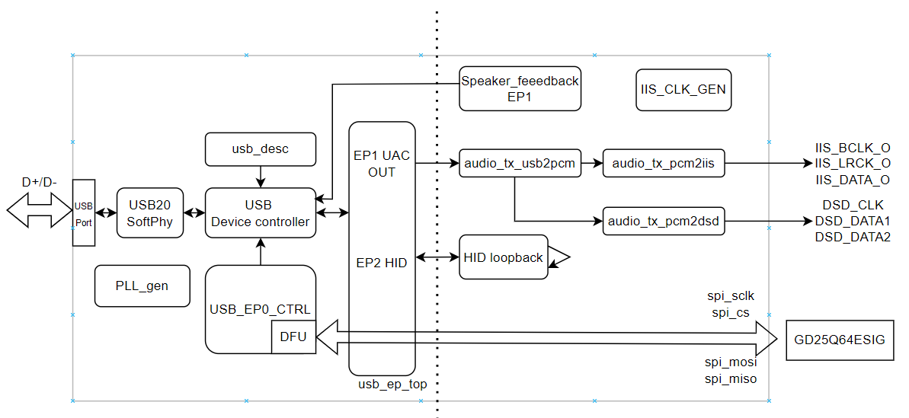
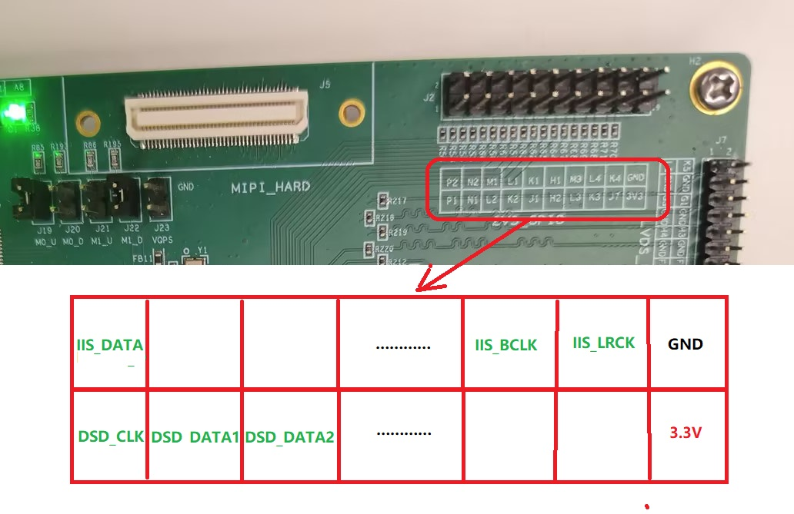
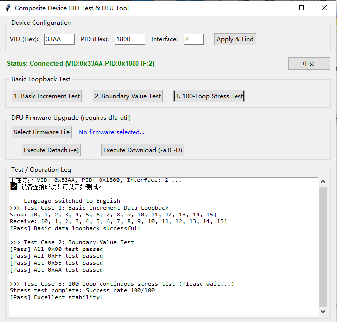
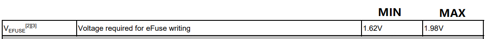
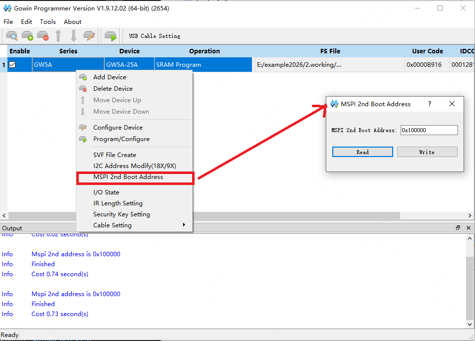
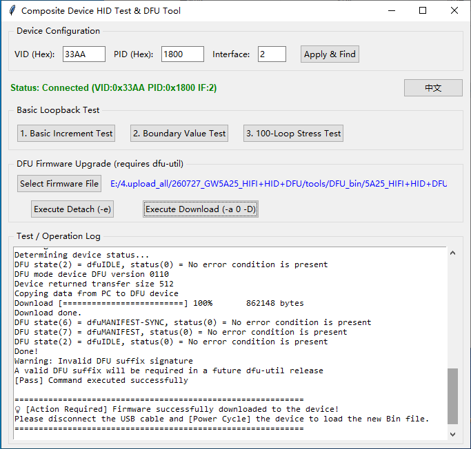

| Version | Date | Description | Author |
|---|---|---|---|
| V1.0 | 2026-07-27 | Initial version, implementing UAC-HIFI audio output (supports IIS/DSD/DoP), HID data loopback, and DFU online upgrade functions. | zefeng |
This project implements a USB 2.0 high-speed composite device based on FPGA, integrating three core functional modules: a UAC 2.0 Hi-Fi audio playback device, a HID human-machine interface device, and a DFU (Device Firmware Upgrade) online background upgrade module.
This project requires the DK_START_GW5A-LV25UG324_v2.0 development board to run.
UAC 2.0 Audio adopts an asynchronous feedback mode, supporting sampling rates from 44.1kHz to 768kHz and 16/24/32-bit depth. It can output 32-bit parallel PCM data, IIS, or DSD/DoP format signals.
The HID Subsystem is designed based on interrupt transfer endpoints. The current version only reserves the loopback test function. It can be customized according to actual user needs.
The DFU online upgrade implements background updates based on standard protocols. To ensure high device reliability and anti-brick capability, the bottom layer adopts a Multi-Boot architecture, strictly partitioning the 8MB SPI Flash space:
0x000000, serving as the target area for dynamic DFU updates;0x100000 (address is customizable), serving as the underlying security baseline for system recovery.The system top-level module Top integrates Dynamic Clock Switching (DCS), the USB Physical Layer (SoftPHY), the USB Protocol Layer, and specific business subsystems, realizing data interconnection from the USB interface to the underlying audio IIS/DSD physical pins and SPI Flash.
The physical pin matrix exposed by the system's top-level Top is as follows:
| Interface Category | Signal Pin Name | Direction | Functional Description |
|---|---|---|---|
| System Control | CLK_IN |
Input | Basic system clock input |
LED |
Output | Reset completion indicator (always on after system reset is released) | |
| USB Physical Layer | usb_dxp_io / usb_dxn_io |
Inout | USB DP/DN differential data bus |
usb_rxdp_i / usb_rxdn_i |
Input | USB differential receive input | |
usb_pullup_en_o |
Output | USB D+ 1.5K pull-up resistor enable control | |
usb_term_dp_io / usb_term_dn_io |
Inout | USB terminal impedance matching pins | |
| SPI Flash | spi_sclk |
Output | SPI bus clock (for DFU programming) |
spi_cs |
Output | SPI chip select signal (active low) | |
spi_mosi |
Output | SPI Master Out / Slave In (MOSI) data line | |
spi_miso |
Input | SPI Master In / Slave Out (MISO) data line | |
| IIS Serial | IIS_BCLK_O |
Output | IIS serial bit clock output |
IIS_LRCK_O |
Output | IIS left/right channel frame clock output | |
IIS_DATA1_O |
Output | IIS audio serial data output (CN01) | |
| DSD Serial | DSD_CLK_O |
Output | DSD audio bit clock output |
DSD_DATA1_O |
Output | DSD left channel serial data output | |
DSD_DATA2_O |
Output | DSD right channel serial data output |
The system internals are divided into the following five main subsystems by logical domains. Modules interact via FIFO-based pipeline transmission.

Gowin_PLL_gen24: Multiplies/divides the input main clock to generate a 24MHz system reference working clock.Gowin_PLL_usb: Core USB clock engine, providing the dedicated 60MHz PHY working clock (PHY_CLKOUT) and 960MHz high-frequency sampling clock (fclk_960M) for the USB physical layer and controller.Gowin_PLL_iis & Gowin_DCS: Audio reference clock source. iis_pll0 generates two reference audio clocks: 49.152MHz (for the 48kHz sampling rate family) and 45.1584MHz (for the 44.1kHz sampling rate family). The dynamic clock selection module Gowin_DCS automatically and seamlessly switches the main audio clock xmclk based on the sample_rate issued by the host.pll_locked), internal counter delay, and timing disconnect logic (disconnect_timer) during DFU mode switching to achieve safe asynchronous reset and synchronous release, ensuring bus re-enumeration and power-on steady state.USB2_0_SoftPHY_Top (USB Physical Layer): Implements USB 2.0 PHY functions within the FPGA logic, directly driving external physical pins and providing a standard UTMI interface to the protocol layer.USB_Device_Controller_Top (USB Core Controller): Handles underlying USB communication protocols, covering packet assembly and parsing, CRC verification, transaction processing, and endpoint data routing.usb_desc (Device Descriptor ROM): Stores the device's enumeration descriptor information (declares VID: 0x33AA, PID: 0x1800), supporting dynamic switching of the configuration descriptor topology based on whether it is in DFU mode (i_dfu_mode).usb_ep_top (Endpoint Manager): Implements USB endpoint data routing. This project is configured as follows:
0x82): HID bidirectional interrupt endpoint (uses streaming FIFO buffer).USB_EP0_ctrl (USB Class-Specific Request Controller): Parses Setup packets, intercepts and processes UAC class-specific requests (sampling rate setting, mute, volume adjustment, DoP/DSD mode enable), supports automatic recognition and parsing of DoP marker codes (0x05/0xFA) to control dsd_en and dop_en flags. Also intercepts and processes DFU class-specific download commands.This subsystem is responsible for receiving audio data sent down by USB Endpoint 1, completing protocol unpacking, and converting it into standard IIS or DSD signals:
IIS_CLK_GEN (IIS Clock Generator): Based on the current sampling rate and data bit width, generates dac_bclk and dac_lrclk in real time.audio_tx_usb2pcm (Speaker 32-bit Parallel PCM Data Conversion): Reassembles and converts the USB 8-bit parallel data stream into 32-bit parallel PCM data.audio_tx_pcm2iis (Speaker IIS Serial Data Conversion): Responsible for converting 32-bit parallel PCM audio data into standard IIS serial bus timing signals (BCLK, LRCK, DATA) and outputting them to the external audio DAC.audio_tx_pcm2dsd (PCM/DoP to DSD Serial Conversion): When DSD/DoP format enablement is detected, extracts the DSD source data stream and reconstructs it into standard dual-channel DSD serial timing (DSD_CLK, DSD_DATA1, DSD_DATA2) for output.speaker_feedback (Asynchronous Feedback Module): By measuring the number of cycles of the local audio clock (xmclk) relative to the USB Start of Frame signal (usb_sof), it dynamically calculates a 16.16 format feedback coefficient and sends it back to the host via EP81, ensuring precise matching between the host's transmission rate and the local consumption rate.ep2_rx_data), directly latches it in the PHY_CLKOUT clock domain, and sends it to EP2 IN (ep2_tx_data) to implement data transmission verification.This subsystem implements a background online upgrade function based on the official USB DFU class.
USB_EP0_ctrl (USB Class-Specific Request Register): In addition to regular control requests, it is responsible for intercepting and parsing DFU class-specific requests (e.g., DFU_DNLOAD, DFU_GETSTATUS, etc.).spi_flash_controller (SPI Flash Controller): The logic internally contains an address offset routing mechanism: When the system is in DFU mode (is_dfu_mode is valid), the controller automatically directs the firmware data stream sent by the host computer to the 0x000000 (Working Image) region of the external Flash.This project adopts a highly parameterized design. Users can quickly tailor system functions and storage capacity by modifying the parameter or internal constants of the top-level modules of each subsystem:
audio_define.vh)| Macro Definition Parameter | Functional Description |
|---|---|
HIFI_ONLY |
When this macro is defined, the EP2 module related to HID and DFU is disabled, retaining only the UAC Hi-Fi playback function. |
HIFI_HID_DFU |
When this macro is defined, it includes all composite functions: UAC Hi-Fi playback, HID loopback, and DFU upgrade functions. |
usb_ep_top)This module is responsible for coordinating the underlying hardware resources and data link routing of all endpoints. The system uses a flexible parameterized mapping mechanism. By configuring the following mapping tables independently, specific business scenarios and the most suitable buffer architectures can be dynamically assigned to different Endpoint Numbers.
Mode Definition Description:
0: DISABLE (Endpoint disabled)1: UMS (Uses Ping-Pong RAM, suitable for high-throughput packet data interaction)2: CDC (Uses pure FIFO, suitable for low-latency UART streaming passthrough)3: UAC (Uses dedicated Audio buffering mechanism, suitable for isochronous audio streams)| Parameter Name | Current Configuration Value | Functional Description |
|---|---|---|
EP_OUT_MODE |
'{ 1:3, 2:2, default:0 } |
OUT Endpoint Mode Mapping Table. Defines the downstream data stream business from the host to the device. Current configuration: • EP1: Mode 3 (UAC downstream, serves the Speaker) • EP2: Mode 2 (HID OUT, serves HID reception) |
EP_IN_MODE |
'{ 1:0, 2:2, default:0 } |
IN Endpoint Mode Mapping Table. Defines the upstream data stream business from the device to the host. Current configuration: • EP2: Mode 2 (HID upstream, serves HID transmission) |
EP_UAC_INTF |
'{ 1:1, default:0 } |
UAC Interface Binding Mapping Table. Dedicated to UAC mode, binds audio endpoints to specific USB Audio Interfaces to correctly parse class-specific requests issued by the host. Current configuration: • EP1 Bound to Interface 1 |
usb_desc)| Parameter Name | Default Value | Functional Description |
|---|---|---|
VENDORID |
16'h33AA |
Vendor ID (VID) |
PRODUCTID |
16'h1800 |
Product ID (PID) |
VERSIONBCD |
16'h0100 |
Product Firmware Version (BCD format, here representing V1.00) |
IIS_BCLK_O, IIS_LRCK_O, IIS_DATA1_O and DSD_CLK_O, DSD_DATA1_O, DSD_DATA2_O test pins of the development board. An external DAC decoding board can also be connected.
33AA, PID: 1800) can be observed.IIS_BCLK_O, IIS_LRCK_O, and IIS_DATA1_O. Confirm that the LRCK frequency strictly equals the set sampling rate (e.g., 48kHz), the BCLK frequency corresponds to the bit clock, and the data line normally outputs 32-bit wide PCM sine wave data packets.foo_input_sacd) in Foobar2000, setting the output mode to DSD over PCM (DoP).0x05 / 0xFA) and assert dop_en / dsd_en. At this time, the PCM/IIS output switches to silence/mute, and the physical pins DSD_CLK_O and DSD_DATA1_O/DATA2_O begin to correctly output the high-frequency DSD bitstream.High Sampling Rate and Special Format Playback Test Instructions
Hiby Music APP Configuration Steps (refer to the figures below):
|
|
| Figure 1: Step 1 Diagram | Figure 2: Step 2 Diagram |
The HID subsystem is configured as an interrupt endpoint (Endpoint 2), implementing pure logical latched data loopback internally in the FPGA.
33AA:1800:2), click "Apply and Find". If "Device Status: Connected" is displayed, the device is successfully linked.This software includes three simple loopback tests.
[0, 1, 2, ..., 15]) and waits for the device to return it identically to ensure smooth basic communication.0x000xFF0x55 (binary 01010101)0xAA (binary 10101010)
This system adopts a Multi-Boot architecture. To implement safe remote upgrades and data isolation, the physical addresses of the external GD25Q64ESIG SPI Flash (8MB) are mapped as follows:
0x000000: Working Image, the default download and erase/write target address for the DFU protocol.0x100000: Golden Image, the factory-programmed security backup area. This address is customizable.0 to 1, it can never be recovered). Please double-check before operating!

Golden Boot Address Setting:
0x800_000, but the actual default address is 0x000_000.0x100_000), and click the "Write" button. If it prompts "Write Success", the write is successful.
AES Key Setting:
The Arora V family of FPGA products supports bitstream data encryption using a 128-bit AES encryption algorithm. Users can add an AES key during compilation. Upon power-up, the device will identify encrypted bitstreams containing preset AES keys and unencrypted bitstreams, and automatically skip encrypted bitstreams with mismatched AES keys.


For more specific instructions, refer to the "UG714-Arora V 25K FPGA Products Programming and Configuration Guide" —— 4.3 Security
To ensure the anti-brick mechanism can intervene normally, before delivery or initial testing, a stable version of the golden_DFU_V1.0.fs firmware must be burned to the golden address via a hardware downloader.
External Flash Mode Arora V.0x100000.0x000000.By default, Windows systems may not properly load the DFU interface driver, requiring configuration using the Zadig tool. A driver-free version of the DFU remote upgrade demo will be released in the future.
Options → List All Devices in the top menu bar sequentially to ensure the tool can read all current physical USB devices.
This section mainly verifies the function of writing new firmware to the external SPI Flash of the development board via the DFU (Device Firmware Upgrade) interface. Two alternative test methods are provided: using the accompanying graphical software, or using the open-source command-line tool dfu-util.
This test uses the HID+DFU Testing Software.exe in the accompanying tools folder to write new firmware to the development board.
Test Environment and Precautions
dfu-util.exe and libusb-1.0.dll, or that the path to dfu-util has been successfully added to the system's environment variables, otherwise the download function cannot be invoked.Upgrade Operation Steps
.bin firmware file you wish to download in the pop-up window..bin file to the development board's spi_flash. The output window below will display the actual download progress in real-time.
Test Firmware Description
The attached DFU_bin folder provides the following firmware for testing:
5A25_HIFI+HID+DFU_V1.0.bin — The complete firmware for this project, including UAC-HIFI, HID, and DFU functions.5A25_HIFIonly_V1.0.bin — The trimmed firmware for this project, containing ONLY the UAC-HIFI function.mode_2CN_V1.4.0.bin — Test firmware, includes the DFU function.mode_8CN_V1.4.0.bin — Test firmware, includes the DFU function.5A25_HIFIonly_V1.0.bin, the other three firmwares retain the DFU upgrade function. This means after burning these three firmwares and repowering, you can still use the software for subsequent firmware burns. If the HIFIonly firmware is burned, the device will no longer respond to subsequent DFU upgrade requests after repowering.
You can also use the cross-platform open-source command-line tool dfu-util for testing. Ensure that dfu-util has been added to the system's environment variables.
Step 1: Prepare the Firmware Bitstream File
In the project synthesis tool, right-click to open Configuration —— BitStream —— General —— Bitstream Format, and select Binary. After compilation, the software generates the corresponding .fs, .bin, and .binx firmware files in the pnr folder. Prepare the .bin file to be updated (e.g., named update_v2.bin).

Step 2: Enumerate and Identify the Device
Open a command-line terminal (CMD / PowerShell) and enter the following command to check if the device is correctly identified:
dfu-util -lIf the driver is normal, the terminal will list the devices currently supporting DFU and display their corresponding VID and PID (e.g., 33AA:1800).
Step 3: Issue New Firmware
Execute the following command in the terminal to trigger the device to switch from APP mode to DFU download mode:
dfu-util -eThen, execute the following command to initiate the download:
dfu-util -d 33AA:1800 -a 0 -D update_v2.binParameter Description:
-d 33AA:1800: Specifies the VID:PID of the target device.-a 0: Specifies the update target as Alt Setting 0. The underlying logic automatically maps it to the 0x000000 address of the Flash.-D: The command is Download (downloads the specified firmware to the device).
Step 4: Background Upgrade Monitoring and Status Description
After executing the download command, a download progress bar appears in the terminal. At this point, the USB controller receives the data stream and drives the SPI Flash controller to execute erase/write operations on the 0x000000 area.
0x000000 upon the next power cycle.
Step 5: Reset and Multi-Boot Verification (Anti-Brick Test)
0x000000, it automatically triggers the multi-boot mechanism, falling back to load the Golden Image located at the 0x100000 backup address. Once the system successfully boots relying on the Golden Image, you can reuse DFU to overwrite and download the correct bitstream file to the 0x000000 address, thereby verifying the device's self-recovery capability.